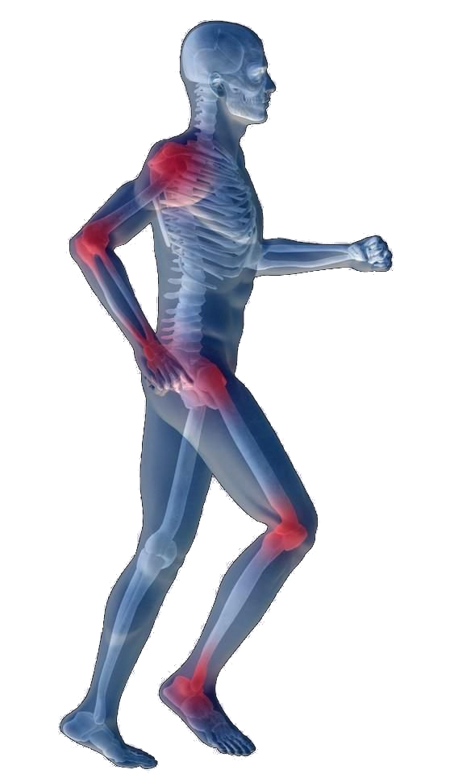
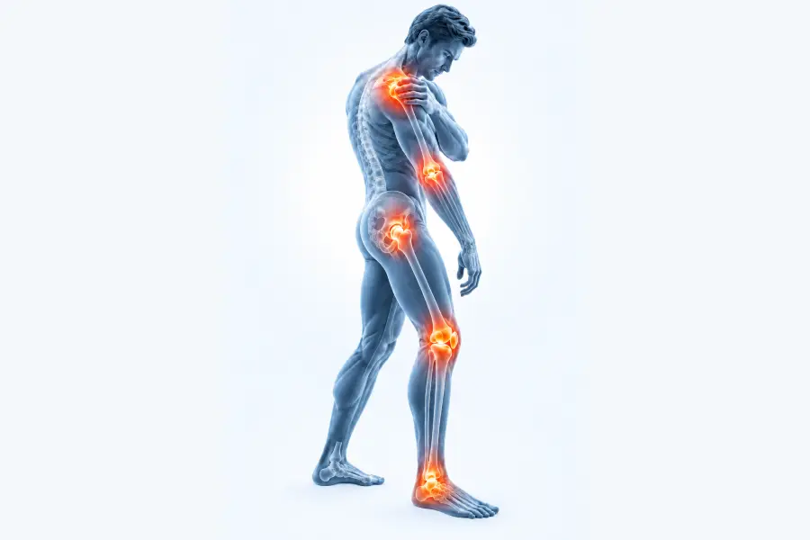

Free Live Webinar
Physical therapy didn’t hold. Surgery feels too far. There’s a step in between.
When a joint won’t settle down, the choice can feel like more of the same or surgery. This session explains the step in between, how it is evaluated, and why it isn’t right for everyone.
- Tuesday, November 17th at 7:00 PM Mountain · Online · Live Q&A
- Presented by Dr. Sunil Jani, MD · Orthopedic surgery, sports medicine & orthobiologics
- Know which questions to ask before choosing the next step

Register for the webinar
Free to attend. Complete four fields to reserve your place.
Review copy
The registration form is switched off here, so nothing on this page creates a lead. On the live page, the form sits in this card.
The decision
Three paths through joint pain
The right next step depends on the diagnosis, the condition of the joint, and what has already been tried. This webinar explains how an orthopedic surgeon thinks through the three broad paths.
Path One
Conservative care
Activity changes, physical therapy, bracing, and rest. For many injuries, conservative care remains a reasonable place to begin.
Path Two
Orthobiologics
PRP and bone marrow concentrate use components from your own body. They may be considered for selected joint and soft-tissue problems.
Path Three
Surgery
Some injuries and stages of degeneration are better served by an operation. The session explains what can move that option to the front.
The goal is to understand how each path is evaluated before a recommendation is made.
Before you register
Who this webinar is for
Use the session to understand the decision process. Personal candidacy still requires an examination and imaging review.
This may be useful if…
- Your knee, shoulder, hip, elbow or ankle still hurts after months of doing the right things.
- You’ve had physical therapy, rest, or a cortisone shot, and the relief didn’t hold.
- Someone has mentioned surgery, and you’d like to understand the alternatives before you agree to it.
- You want to know which questions to ask before choosing the next step.
What the webinar cannot do
- Diagnose the cause of a specific person’s pain.
- Interpret personal imaging during the session.
- Determine whether PRP, bone marrow concentrate, or surgery is appropriate for you.
- Promise a particular result or recovery timeline.
Your presenter
Dr. Sunil Jani
Board-certified orthopedic surgeon · Sports medicine & orthobiologics
Dr. Jani is a board-certified orthopedic surgeon focused on sports medicine and orthobiologics. At Longmont Orthopedics, he evaluates conservative care, PRP, bone marrow concentrate, and surgery, then explains how the examination and imaging shape the recommendation.
That range matters. The webinar is built around how a surgeon weighs the options instead of starting with the assumption that every person needs the same treatment.
Surgery can be necessary. The useful question is how the diagnosis, imaging, and goals determine when it belongs in the plan.

When daily life changes
A sore joint can start making decisions for you
Persistent pain can show up in the shoulder, elbow, hip, knee, or ankle and change how someone moves through the day. The webinar explains why the next step still depends on the diagnosis, imaging, and what has already been tried.
The session
What we’ll cover
- 1 Why symptoms can persist or return after therapy, rest, or injections, and why the next step depends on the diagnosis.
- 2 What PRP and bone marrow concentrate are, in plain language, and how they differ.
- 3 How candidacy is evaluated, including reasons an orthobiologic procedure may not be appropriate.
- 4 When surgery moves forward, when it may be reasonable to wait, and what an imaging review contributes to that decision.
- 5 Common decision mistakes, including choosing a procedure before the problem has been properly evaluated.
Questions
Before you register
What’s the difference between PRP and bone marrow concentrate?
PRP concentrates platelets from a sample of your own blood. Bone marrow concentrate is drawn from your own marrow and contains a broader mix of cells and growth factors. The webinar explains how the injury, joint condition, and prior treatment affect which options may be discussed.
How do I know whether I’m a candidate?
Candidacy requires an examination and imaging review. The webinar explains the factors an orthopedic surgeon considers, including reasons PRP or bone marrow concentrate may not be appropriate. It cannot determine personal candidacy.
Can I ask questions live?
Yes. Dr. Jani will answer general questions during the live Q&A. He cannot diagnose a condition or make an individual treatment recommendation during the webinar.
Is this a sales presentation?
The session is educational and includes a live Q&A. It explains how conservative care, orthobiologics, and surgery are evaluated. Registering does not commit you to treatment. If you want a personal evaluation afterward, the practice can explain how to request one.
Will the webinar be recorded?
Yes. Everyone who registers receives the replay, whether or not they attend live.
Find out what’s actually on the table
One session with an orthopedic surgeon, covering conservative care, orthobiologics, and surgery, plus the questions that help distinguish one path from another.
Save my free spot